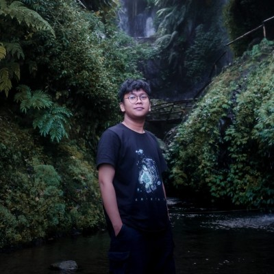

FEB 2025
SEKARANG
SEKARANG
PraSaga Foundation — Community Growth
Mendorong pertumbuhan dan keterlibatan komunitas untuk ekosistem blockchain.CURRENT
Saya Bagas Ady Santoso — penggerak komunitas, kreator, dan Web3 native yang mengubah ide terdesentralisasi menjadi momentum nyata.
LEBIH
Membantu produk Web3 menemukan suara, membangun kepercayaan, dan bertumbuh bersama komunitasnya.
Dari strategi komunitas hingga desain dan edukasi, saya menikmati proses membuat teknologi baru terasa lebih manusiawi dan mudah diakses.
Membangun komunitas yang aktif, loyal, dan berdaya.
↗Menerjemahkan konsep kompleks menjadi cerita yang relevan.
↗Menciptakan identitas dan konten yang punya daya ingat.
↗Mengutamakan pengalaman yang jelas dan intuitif.
↗